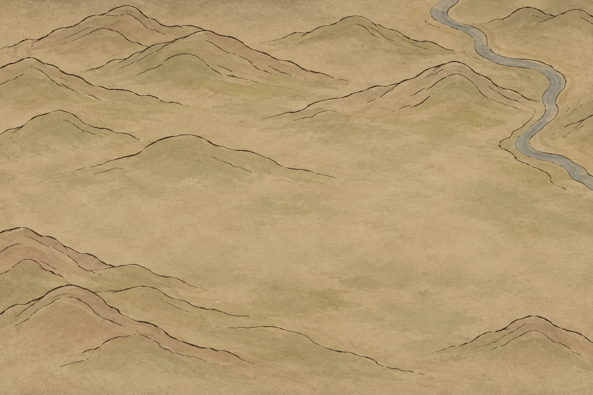
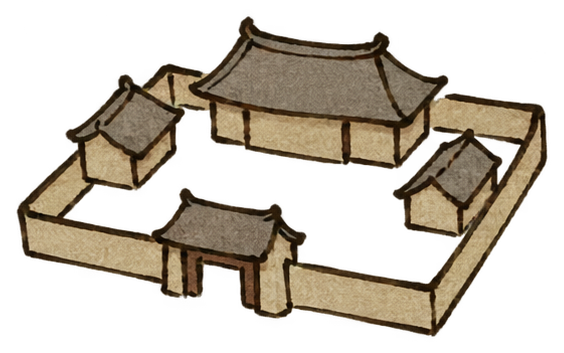
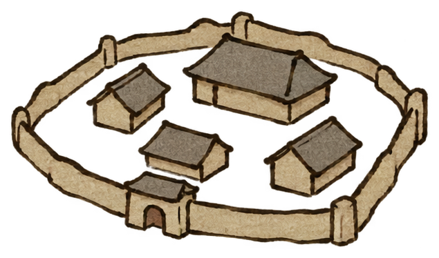
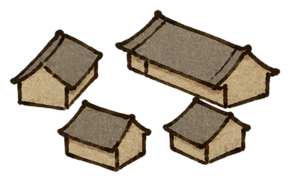

仅试画风：左为宗门，中为城池，右为镇集。地形、建筑各为独立图片，未采用参考截图的地图布局、路线、人物或界面。
底图按原像素显示；窄窗口可横向滚动，无放大操作。




宗门模板 · 透明PNG
城池模板 · 透明PNG
镇集模板 · 透明PNG
单独模板为较大检视图；上方地图叠放宽度依次140、128、100像素。此页是通用样式试阅，不代表正式地点或九块底图已换稿。制作说明 · 叠放效果PNG